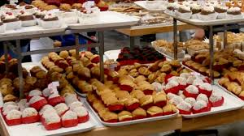
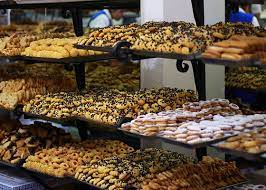

Top 5 Productos mas Vendidos
 Cabe destacar la gran variedad de panificados que producimos.
Contamos con más de 90 años de experiencia en el rubro. Nuestra
misión es mantener satisfechos a nuestros clientes brindándoles
las exquisiteces preparadas por los maestros pasteleros de
Panaderia Cony.
Además, por nuestra calidad de atención y servicio nos siguen eligiendo como el primer día.